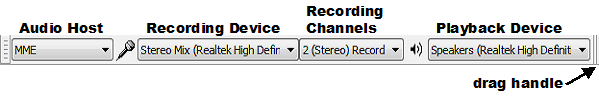

Tutorial - Recording Computer Playback on Windows
From Audacity Manual
- On Windows XP, Audacity relies on your computer sound device providing an input for recording computer playback, typically called "Stereo Mix" or "What U Hear". This input can be chosen in Audacity's Device Toolbar. If there is no such input, you can use other methods such as a loopback cable as described below.
- On Windows Vista, Windows 7 or Windows 8, sound devices often lack a "Stereo Mix" or similar input, or it must be specially enabled in the Windows "Sound" Control Panel. On these operating systems, you can also choose Windows WASAPI host and the "(loopback)" input choice in Device Toolbar. This will record computer playback even if the computer sound device lacks its own input to do this.
| Copyright or website restrictions may prevent you recording or distributing material. Check first. |
Choosing the recording device in Audacity
Choose "MME" or "Windows DirectSound" in the Audio Host box of Device Toolbar and the sound device's input for recording computer playback in the third (Recording Device) box of Device Toolbar. You can also choose this recording device at Recording Device in Devices Preferences.
- 
If the sound device provides an input for recording computer playback, it could be called "Stereo Mix", "Wave Out", "Sum", "What U Hear", "Loopback" or other names. The exact name and whether such an input is available depends entirely on the drivers of your sound device. Also Audacity will not see this input unless it is enabled in the Windows Control Panel.
Choose the Windows WASAPI host (next section) if you want to record playback of a USB, wireless or external sound device.
| should be off when recording computer playback, so if Software Playthrough has a check mark, click that item to turn it off. Otherwise you will hear and record echoes or distorted sound. |
Windows WASAPI loopback recording
On Windows Vista, Windows 7 or Windows 8 only you can choose the Windows WASAPI Audio Host and then the (loopback) input in the Recording Device box. Choose the loopback input for the computer playback device you will be listening to (for example, "Speakers (loopback)" ). The loopback input records computer playback even if your sound device lacks its own stereo mix or similar input:
WASAPI loopback has an advantage over stereo mix or similar inputs provided by the soundcard that the capture is entirely digital (rather than converting to analog for playback, then back to digital when Audacity receives it). System sounds playing through the device selected for WASAPI loopback are still captured, however.
Playback and Recording sliders
The behavior of the Audacity playback and recording sliders may vary according to the sound device you are recording from.
- On some devices the Mixer Toolbar recording volume slider will be grayed out when selecting the Windows WASAPI host, and even if not grayed out, the device may not support Audacity or the system input slider adjusting its volume. To control the recording level on those systems, you can try adjusting the playback level of the audio. This is best done in the application that is playing the audio, for example the video or audio player on the website you are recording from. If this does not work then Audacity will record at a fixed, safe level irrespective of the playback level of the audio.
- On many other devices, the Audacity recording volume and playback volume sliders will be "linked" so that both sliders move when you move either slider, and either slider will affect the level of the audio that you hear. This will often happen if in Audacity you set the (loopback) recording device to the same built-in device as the one selected for playback.
- When the Audacity recording and playback sliders are linked, adjusting either slider will often not affect the level already being recorded. This means that if you don't want to hear what you are recording, you can simply turn down either Audacity volume slider. However on some devices, turning down either slider may turn down or silence the achieved recording level. If this happens then to make a recording without hearing it, you can try the following:
- Click the speaker by the system clock, click the "Mixer" link, then mute the "Device" slider at far left of the "Volume Mixer" window
- Plug in external speakers or headphones and turn those down
- Plug in any 1/8 inch (3.5 mm) minijack plug with no lead attached.
- You will normally need to start playing the stream (or to have previously played some other audio in the application you are using for playback) before pressing Record in Audacity.
- WASAPI loopback may not be able to record in mono on all devices. If mono recording produces an error, change Device Toolbar to "2 (Stereo) Recording Channels". You can convert a stereo recording to mono using .
If you do not see any input for recording computer playback, exit Audacity and continue reading below.
Windows Control Panel for sounds
Windows Vista, Windows 7 and Windows 8 computers almost always only have microphone inputs enabled by default. Earlier Windows systems may also need the input for recording computer playback to be made visible before Audacity can use it. To show or enable inputs, launch the sound device control panel from the Windows Control Panel or from the system tray (by the clock).
- Windows Vista, Windows 7 and Windows 8
- Right-click over the by the system clock then choose to open the Recording tab of "Sound".
- Right-click anywhere inside the Recording tab and choose "Show disabled devices" then right-click again and choose "Show Disconnected Devices".
- Right-click specifically over the input device you want to record with (in this case "Stereo Mix" or whatever alternative you have), and if visible, choose "Enable".
- Sometimes it helps to right-click over the "stereo mix" or similar device again and choose "Set as Default Device".
- If you need more help, see these Wiki instructions for Windows Vista, Windows 7 and Windows 8.
- Windows XP
- Right-click over the by the system clock then choose .
- In "Sounds and Audio Devices Properties" or similar, click on the , then in the , select the "Default device" you are trying to record from (this will probably be the name of your built-in sound device).
- Click the button.
- If you can see a stereo mix or similar option, try clicking in its box to select it.
- Otherwise, choose then .
- In the window that appears, click the "Recording" radio button, then in "Show the following volume controls", click in the box for stereo mix or similar, then "OK".
- If you need more help, see these Wiki instructions for Windows XP.
RealTek and other soundcard control panels
If you still have no stereo mix input in Windows, sometimes this input can be enabled in the soundcard's own control panel, especially with older RealTek devices. The soundcard's own control panel can be found in the Windows Control Panel. Hints for RealTek control panels:
- Some panels "select" an input by muting all but one, so in this case, mute everything except Stereo Mix
- If you don't see Stereo Mix, click the wrench or spanner icon and enable Stereo Mix in the dialog that appears
- In some panels the option to choose is "Enabled recording multi-streaming"
- You should now see a volume control for Stereo Mix; make sure it is selected or unmuted.
Updating sound device drivers
If there is still no suitable input, try updating the sound device drivers for your soundcard. This can sometimes produce an additional input for recording computer playback, and may fix other problems such as poor quality or skipping.
Loopback cable
An alternative method of recording audio playing on the computer is to buy a cable with 1/8 inch (3.5 mm) stereo connectors at each end. Suitable cables are available from almost any audio retailer. Connect one end of the cable to the computer's audio output (green) and the other end to the line-in input (blue). Then choose the line-in as input device in Audacity.
| Connecting to the microphone input (red) may produce mono sound or poor quality. |
Alternative programs for recording computer playback
You can use other programs to record computer playback that do not rely on the computer sound device having this ability. These programs will make an audio file which can then be imported into Audacity for editing.
All the options below grab the audio digitally from the application producing the sound. This has advantages over stereo mix recording. Lossy digital-analog-digital conversions are avoided and also unwanted system beeps and alerts are not captured.
- SoundLeech is a free application for Windows which runs from the system tray. It records to lossless WAV format only.
- VB-Audio Virtual Cable is a donation-ware application for Windows XP or later. You can set the Cable Input as default playback device then set Audacity to record from the Cable Output.
- TotalRecorder is a low cost recording package. Internet streams can optionally be captured at faster than real time rates (monitoring is not available in that mode).
External soundcards
A further alternative is an external USB soundcard with a "Stereo Mix" type of option. An example known to work on all versions of Windows is "Trust Sound Expert External". Not all USB soundcards offer a Stereo Mix option, so read the specifications carefully before purchasing.